Векторизация полигональных объектов в QGIS на примере лесных выделов
Методика векторизации сложных полигональных объектов на примере лесных выделов и других объектов.
©NextGIS, разрешено для публикации на GIS-Lab.info. Авторы: Рыков Д.А., Маниша А.?., Дубинин М.Ю. Лицензия: 
В статье изложена инструкция по векторизации выделов, в том числе лесопатологических, очагов вредителей и болезней в программе QGIS версии 1.5.0. Порядок векторизации в других программах или в QGIS версии, отличной от 1.5.0, может отличаться от представленного.
Оглавление
- 1 Общие принципы векторизации
- 1.1 Порядок векторизации
- 1.2 Требования к векторизуемым растрам
- 1.3 Топология
- 1.4 Атрибутика и геометрия
- 2 Процесс векторизации
- 2.1 Добавление в проект векторизуемого растра
- 2.2 Создание нового векторного слоя
- 2.3 Установка масштаба векторизации
- 2.4 Включение режима редактирования
- 2.5 Векторизация
- 2.6 Активирование режима прилипания
- 2.7 Векторизация объектов низкого уровня
- 2.8 Заполнение атрибутики слоя
- 2.9 Завершение процесса векторизации
- 3 Проверка корректности результатов и исправление ошибок
- 3.1 Проверка валидности объектов
- 3.2 Проверка топологической корректности
- 3.3 Сопоставление площадей из геометрий и из лесоустройства
- 3.4 Контроль правильности атрибутов
- 4 Векторизация лесопатологических выделов
1. Общие принципы векторизации
В нашем примере векторизация осуществляется в качестве подготовительного этапа для создания карты насаждений с нарушенной устойчивостью и утративших устойчивость насаждений, карт очагов, пространственной интерполяции данных учета численности вредителей, для использования данных дистанционного зондирования. В зависимости от задач векторизуются квартальная сеть, границы выделов, границы лесопатологических выделов, отдельные элементы топографических, почвенных и других карт. Наиболее распространенной задачей является создание карт насаждений с нарушенной устойчивостью, насаждений утративших устойчивость и карт очагов. В зависимости от плотности работ на территории целесообразно проводить векторизацию целых лесничеств (при наземном экспедиционном обследовании, при работе в районах сильно поврежденных определенным ослабляющим фактором или с очагами, охватывающими значительную часть насаждений), отдельных участков в границах лесничеств в которых проводились лесопатологические работы (урочищ), и отдельных кварталов и выделов. К векторизации отдельных выделов лучше прибегать в редких случаях, предпочитая векторизовать сразу крупные участки.
1.1 Порядок векторизации
Процесс векторизации осуществляется в соответствии с принципом «от большого к малому». Согласно этому принципу, в первую очередь отрисовываются границы более общей единицы (лесхоза), которая после этого разбивается на вложенные полигоны (границы лесничеств). Далее, лесничество, в свою очередь, разрезается на кварталы, а кварталы на выделы.
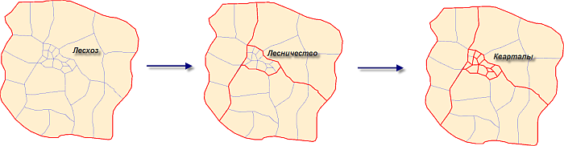
Если граница между лесхозами проходит по границе соседних субъектов федерации, то в этом случае оба таких лесхоза обязательно должны быть состыкованы с этой границей. В противном случае могут возникнуть топологические ошибки (щели или перехлесты). В связи с чем, для работы необходимо иметь слой административного деления РФ.
Границу соседних лесхозов следует рисовать по привязанным растрам планов их лесонасаждений. Если загрузив оба растра, невооруженным глазом видно, что граница одного лесхоза не совпадает с границей другого, то это говорит о том, что как минимум один из растров привязан не правильно. В этом случае необходимо перепривязать растры таким образом, чтобы границы лесхозов находились максимально близко друг к другу.
Наиболее сложной является ситуация, когда существует растровый план лесонасаждений одного из соседствующих лесхозов, в то время как план второго отсутствует. В этом случае приступать к векторизации можно только в случае 100% уверенности, что цифруемый растр привязан верно. Иначе все усилия могут быть потрачены впустую. Когда же появится растр на соседний лесхоз (также качественно привязанный), то оцифровав его, не забудьте «сбить» границы векторного слоя с соседним. Как это делается - будет показано позже.
1.2 Требования к векторизуемым растрам
На заре ГИС, пользователями, создающими данные (особенно начинающими) относительно мало внимания уделялось их системе координат. Зачастую, отсканированные материалы, минуя процесс географической привязки сразу отправлялись на оцифровку, такое явление нередко и в наши дни и является типичной ошибкой начинающих пользователей. Результатом такого подхода обычно являются данные, не имеющие географической системы координат.
Векторизацию имеет смысл осуществлять только для качественно привязанных растров. Если же растр будет не привязан или привязан не качественно, то оцифрованный по нему векторный слой не будет представлять никакой ценности, его невозможно будет наложить на другие - привязанные данные. Кроме того, его нельзя будет трансформировать в другую систему координат, по нему невозможно производить вычисления длин, углов, площадей, координат объектов и т. д.
Конечно существуют методики, позволяющие привязать и векторные данные, но это довольно сложный процесс и не всегда дающий необходимый результат, поэтому не стоит на него полагаться.
1.3 Топология
При векторизации растровых данных могут возникать так называемые ошибки топологии. В случае полигональных объектов наиболее часто встречаются ошибки двух видов - это щели и перехлесты.
Перехлест возникает в случае, когда некоторая область принадлежит одновременно нескольким полигонам:
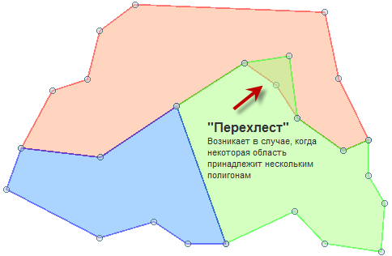
Щели же образуются при не полном совпадения границ соседних полигонов:
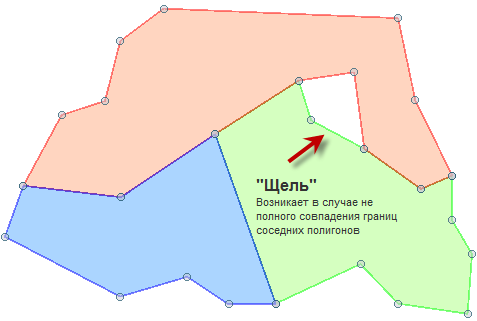
Допустим, что в перехлест попали два соседних квартала. В этом случае становится невозможным однозначно ответить на вопрос какому кварталу принадлежит область перекрытия.
Щели также противоречат логике разбиения лесничества на кварталы, в соответствии с которой каждая область лесничества должна однозначно идентифицировать квартал, в который она попадает.
Пример фрагмента топологически корректного полигонального слоя:
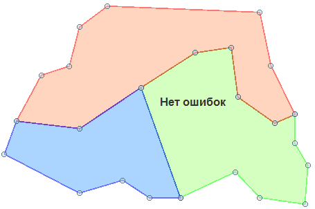
Важно: При векторизации необходимо тщательно отслеживать появление вышеописанных ошибок и избегать их. Поскольку исправление этих ошибок очень сложно автоматизировать, то зачастую приходится все исправлять вручную. Работа по исправлению порой бывает сравнима по времени с работой, затраченной на саму векторизацию.
1.4 Атрибутика и геометрия
Процесс создания векторного слоя зачастую разделяют на две части: отрисовку контуров (геометрических объектов) и наполнение атрибутивной таблицы. Такой подход очень удобен в тех случаях, если какие-то из полей редактируемого слоя содержат одинаковые данные (например, при отрисовке кварталов внутри лесничества значение поля, содержащего название лесничества, будет одинаковым для всех записей). Такие поля можно заполнить автоматически с помощью калькулятора полей по завершению отрисовки геометрий, а не делать это каждый раз по окончанию их ввода.
2. Процесс векторизации
Рассмотрим процесс векторизации кварталов на основе предварительно привязанного растрового плана лесонасаждений, находящегося в географической системе координат.
2.1 Добавление в проект векторизуемого растра
Откройте геопривязанный растр, который необходимо векторизовать. Для этого на панели инструментов нажмите кнопку Добавить растровый слой:
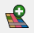
После чего в выпадающем списке укажите его тип и выберите необходимый файл:
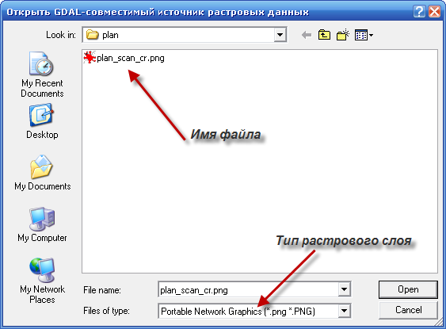
Выбранный растр появится в рабочей области QGIS:
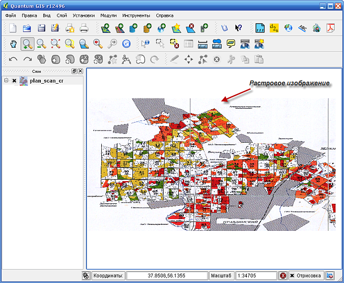
2.2 Создание нового векторного слоя
На панели инструментов нажмите кнопку Новый векторный слой:
В открывшемся окне выберите тип создаваемого слоя. При векторизации лесонасаждений чаще всего используется полигональный тип:
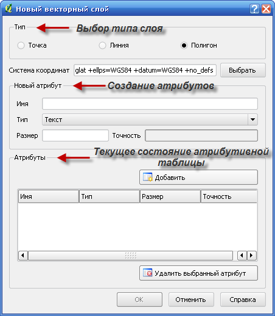
Далее необходимо определить атрибутивную таблицу. В области настройки свойств поля задайте его имя, оно не должно превышать 10 символов. В случае превышения этого порога лишние символы будут отброшены. Затем выберите тип поля. При создании векторного слоя доступно три типа: Текст, Целое число и Десятичное число.
Текстовый тип рекомендуется использовать для тех полей, в которых планируется хранение всевозможных названий, адресов, комментариев и т. д., вообщем строк, в которых одновременно могут использоваться всевозможные алфавитно-цифровые символы. Максимальный размер текстового поля составляет 255 символов. Если заранее неизвестно, в каком формате будут храниться данные, то для таких полей рекомендуется использовать строковый тип.
Целочисленный тип поля как следует из названия используется для хранения данных, представленных целыми числами. Данный тип может быть использован, например, для хранения информации о номерах кварталов. Охват данного типа: -999 999 999 … 999 999 999.
И, наконец, десятичный тип используется для хранения данных, представленных дробным числом - например, для хранения информации о площадях объектов. При выборе этого типа становится активным текстовое поле Точность, в котором можно указать количество значащих символов после запятой. Отметьте, что Размер в этом случае складывается из размера целой части и размера дробной части плюс 1 (разделитель дробной и целой частей). То есть, размер числа 123,321 равен 7.
После того, как были заданы имя, тип и размер поля, его следует добавить в атрибутивную таблицу. Для этого нажмите кнопку:

Для удаления поля из таблицы выберите его и нажмите кнопку:
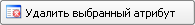
Создадим таблицу, содержащую 5 полей: NOMLESN – номер лесничества, NOMKVR – номер квартала, NOMLESX – номер лесхоза, NAMELESX – название лесхоза, NAMELESN – название лесничества.
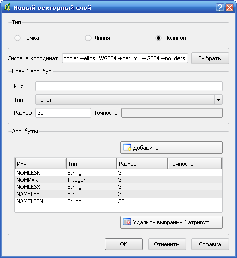
После того, как структура атрибутивной таблицы была определена, нажмите кнопку OK и в открывшемся окне укажите имя и путь до создаваемого слоя.
2.3 Установка масштаба векторизации
Определите и установите масштаб векторизации. Он должен быть не меньше рабочего масштаба на котором в дальнейшем будет производится работа с векторным слоем. Рекомендуемые масштабы векторизации:
| Масштаб исходного растра | Масштаб оцифровки |
|---|---|
1: 10 000 |
Не менее 1:2 000 |
1: 25 000 |
Не менее 1: 5 000 |
1: 50 000 |
Не менее 1: 10 000 |
Выбранный масштаб необходимо указать на панели состояния, при этом он не должен уменьшаться в процессе векторизации.
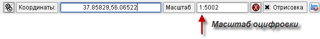
При векторизации мелких объектов бывает необходимым увеличить масштаб. Это очень удобно делать без отрыва от инструмента отрисовки простым вращением колесика мыши. Если границы отрисовываемого объекта не входят в экран, в этом случае изображение может быть сдвинуто с помощью клавиш стрелок, расположенных на клавиатуре.
2.4 Включение режима редактирования
Для создания нового или редактирования имеющегося слоя необходимо включить режим редактирования. Для этого на панели инструментов нажмите кнопку:
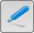
При включенном режиме редактирования отображаются узлы объектов слоя. Перетягивая эти узлы на новое место, можно изменять форму объектов. Также можно воспользоваться специальными инструментами редактирования для перемещения, копирования или удаления объектов целиком.
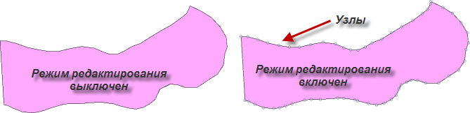
2.5 Векторизация
Приступим непосредственно к векторизации. Согласно принципу «от большого к малому» отрисуем прежде всего границу лесничества. Для этого:
- В списке слоев выберите редактируемый слои и на панели инструментов нажмите кнопку Создать полигон:
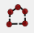 - Последовательно щелкая левой клавишей мыши по вершинам границы лесничества, отрисуем ее контур. Отмена ошибочно введенной вершины осуществляется клавишей Backspace.
- По достижению последней вершины — щелкните не левой, как до этого, а правой кнопкой мыши — это будет признак окончания ввода объекта.
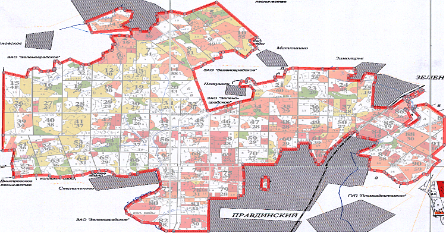
После завершения ввода полигона появится окно, в котором предлагается заполнить поля таблицы атрибутов для вновь созданного объекта:

Как уже было отмечено ранее процесс отрисовки границ и наполнения атрибутивной таблицы данными следует разнести во времени. В появившемся окне нажмите кнопку ОК, а затем перейдите в меню Установки - Параметры - Оцифровка и отметьте следующий пункт:
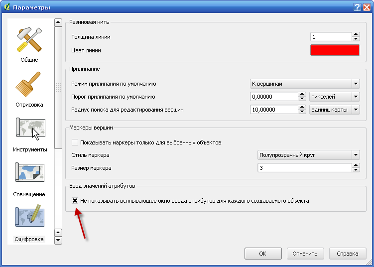
Больше окно с предложением заполнить атрибутику не появится.
Чтобы отрисованный векторный слой полностью не перекрывал растровую подложку рекомендуется включить прозрачность. Правый щелчок мыши на имени слоя в таблице слоев - Свойства - Символика:
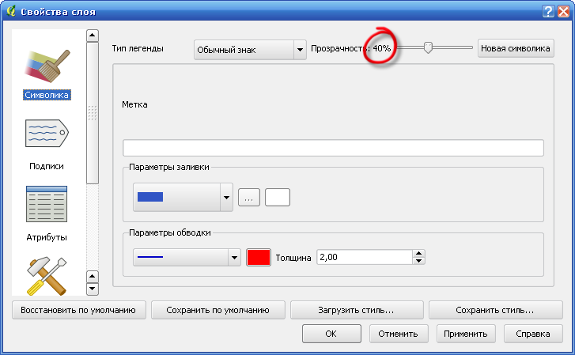
2.6 Активирование режима прилипания
Во избежании топологических ошибок обязательно следует использовать возможность прилипания – автоматического совмещения узлов объектов при редактировании. Можно задать один из трех режимов: к вершинам, к сегментам, к вершинам и сегментам. Помимо этого следует установить порог прилипания. Режим и порог прилипания работают следующим образом: при подведении курсора мыши на определенное расстояние (порог прилипания) от сегмента или вершины (в зависимости от режима прилипания), рисуемая линия автоматически продолжается до касания с ближайшим сегментом или вершиной. На рисунке представлен пример использования различных режимов прилипания:
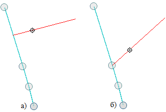
Режимы прилипания (большой кружок – вершины существующей линии, маленький – последняя вершина создаваемой линии): а) к сегменту, б) к вершине
Для настройки прилипания выберите Установки - Свойства проекта - Общие и нажмите кнопку Параметры прилипания:
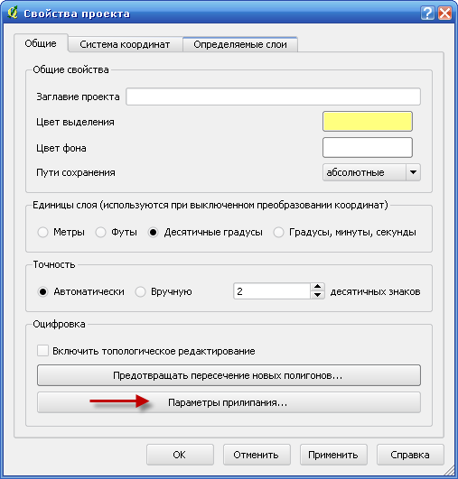
В открывшемся окне отметьте редактируемый слой и установите для него параметры прилипания. Рекомендуется использовать режим прилипания к сегментам и вершинам, порог прилипания подбирается индивидуально в каждом случае в зависимости от размера векторизуемого объекта и текущего масштаба. Если в ходе работы возникнут сложности с текущим порогом прилипания, его в любой момент можно уменьшить. Также рекомендуется единицы порога прилипания устанавливать в пикселях.
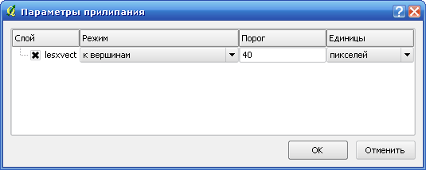
2.7 Векторизация объектов низкого уровня
После того как была отрисована граница лесничества и настроены параметры прилипания, согласно принципу «от большого к малому» следует переходить к отрисовки объектов более низкого уровня — кварталов.
На этом и всех последующих этапах мы больше не будем рисовать полигоны, а будем только разбивать их на более мелкие части с помощью инструмента Разбить объекты:

- В списке слоев выберите редактируемый слой и нажмите кнопку Разбить объекты;
- Щелкните курсором возле точки пересечения любой из границ квартала с границей лесничества на расстоянии, большим, чем порог прилипания:
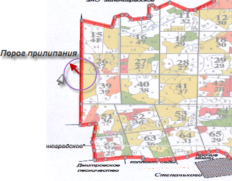
Исходное положение при разбивке объектов - «Прилипните» к границе лесничества в точке пересечения ее и границы квартала и щелкните левой кнопкой мыши:
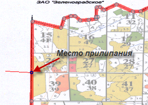
Прилипание к уже векторизованной границе - Последовательно щелкая по границам кварталов, в конечном итоге «прилипните» к одной из границ лесничества и снова щелкните левой кнопкой:
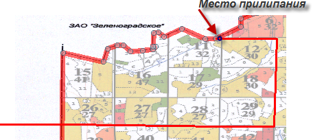
Окончание разбивки - Переместите курсор за границу лесхоза на расстояние, большее чем порог прилипания и нажмите правую кнопку мыши.
Таким образом мы отрезали небольшой кусок от исходного полигона. Повторяя данные действия, можно векторизовать все кварталы.
В конечном итоге должен получиться слой следующего вида:
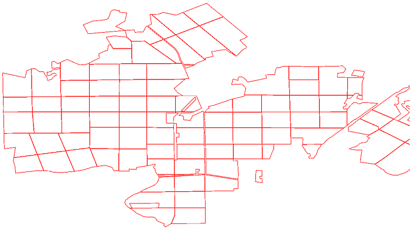
2.8 Заполнение атрибутики слоя
После того, как геометрическая составляющая слоя была создана, необходимо провести ее атрибутивное наполнение.
Выберите Установки - Параметры - Общие и отметьте следующий пункт:
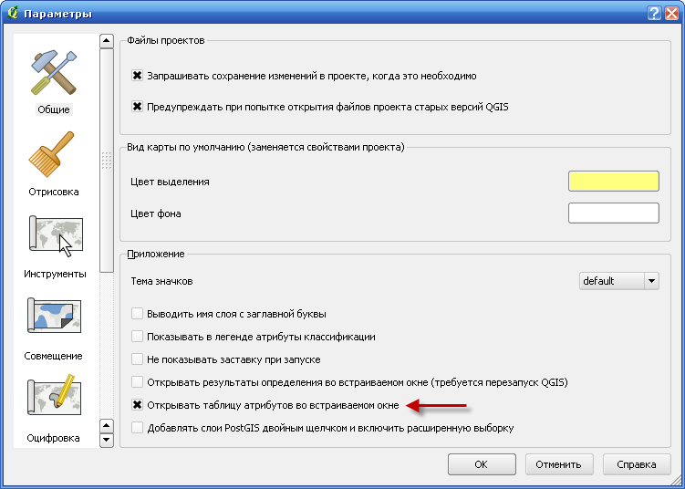
В списке слоев выберите создаваемый слой и убедитесь, что он открыт на редактирование. На панели инструментов нажмите кнопку:
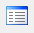
Откроется атрибутивная таблица слоя. Отметьте пункт Показать только выбранные записи:
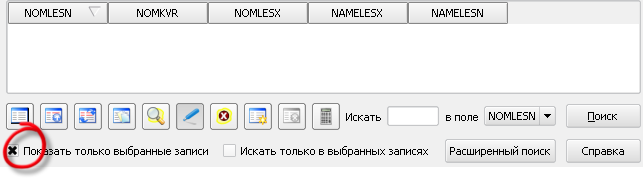
Затем с помощью инструмента:

выберите один из кварталов, атрибутивная таблица примет вид:
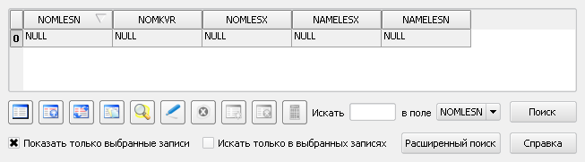
Значение NULL свидетельствует о том, что данные поля не заполнены. Заполните их нужными данными.
Замечание 1
Если какое-либо из полей атрибутивной таблицы для каждой записи имеет одинаковое значение, то для заполнения таких полей удобней всего воспользоваться калькулятором полей. Покажем как таким способом можно заполнить поле «NAMELESX» значением «Правдинский лесхоз».
Откроем атрибутивную таблицу слоя.
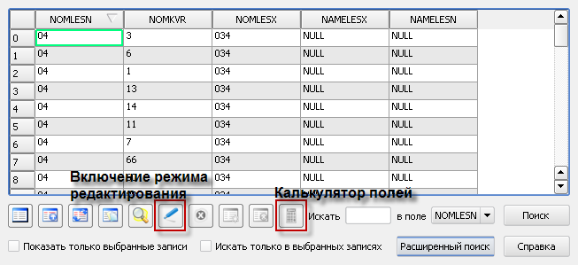
Нажмем кнопку Калькулятор полей. Чтобы эта кнопка была активна, режим редактирования слоя должен быть включенным. В открывшемся окне отметим пункт Обновить существующее поле и в выпадающем списке выберем поле «NAMELESX». В поле Выражение введем строку 'Правдинский лесхоз' (не забывайте про одинарные кавычки!):
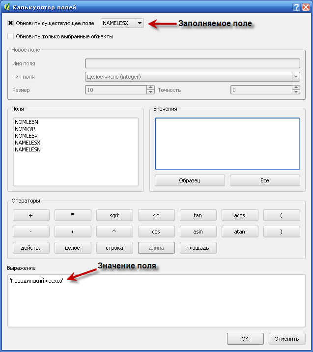
Поле нажатия кнопки OK, атрибутивная таблица будет выглядеть следующим образом:
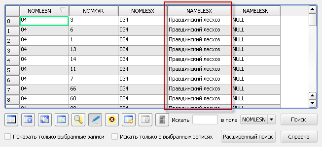
Замечание 2
При разбиении полигона на части инструментом Разбить объекты:
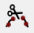
атрибутика разбиваемого полигона полностью переносится на вновь созданный.
Замечание 3
Зачастую имеются уже готовые векторные слои или всевозможные таблицы или файлы баз данных, содержащих атрибутивную информацию о векторизуемых объектах (таксационной характеристики, ведомости лп-таксации), позволяющие заполнить атрибутивную информацию создаваемого слоя в автоматическом режиме. Покажем как это делается.
Для присоединения атрибутивных данных одного shape-файла к другому или *.dbf таблицы к shape файлу служит инструмент Объединение атрибутов.
Выберите Инструменты - Управление данными - Объединение атрибутов:
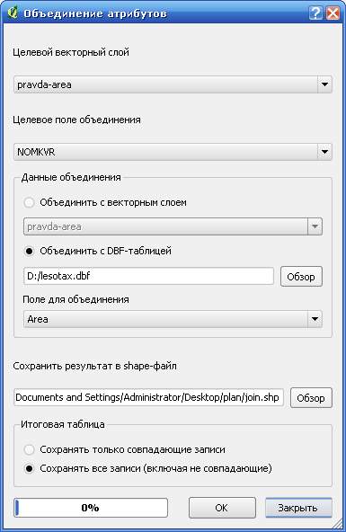
Выберите целевой слой и слой (или *.dbf файл), атрибуты которого необходимо присоединить к целевому слою. Укажите поля, по которым будет производиться сравнение (должны быть одинакового типа — текстового или числового), отметьте пункт Сохранять все записи (включая не совпадающие). Укажите имя результирующего shape- файла и нажмите OK.
Операция часто применяется при присоединении к слоям выделов и очагов таксации и лесопатологической таксации. Для корректного объединения и в слое и в таблице необходимо уникальное поле ключ. Dbf файл для объединения может быть получен экспортом из программы Excel или Access.
2.9 Завершение процесса векторизации
После того, как все контуры были отрисованы и заполнена атрибутика выключите режим редактирования кнопкой:
В открывшемся окне нажмите Сохранить. На этом процесс векторизации закончен.
3. Проверка корректности результатов и исправление ошибок
Исправление ошибок — не тривиальный и довольно трудозатратный процесс, поэтому рекомендуется избегать ошибок еще в процессе векторизации. Однако это не всегда удается, поэтому необходимо быть готовым исправлять найденные ошибки. Рассмотрим некоторые наиболее часто встречающиеся ошибки.
3.1 Проверка валидности объектов
В первую очередь необходимо проверять геометрические объекты слоя на валидность, то есть на соответствие их форм определенным правилам, закрепленным в стандарте (OpenGIS® Implementation Specification for Geographic information - Simple feature access - Part 1: Common Architecture).
Для этого в QGIS есть специальный инструмент Проверка геометрии:
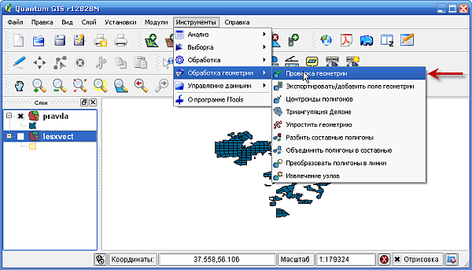
В окне инструмента выберите имя проверяемого слоя и нажмите OK:
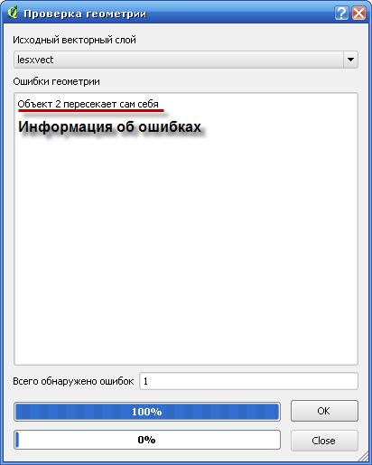
Как видно из рисунка, в обработанном слое содержится один невалидный полигон, так как согласно стандарту полигон не должен иметь самопересечений. Находим этот объект на карте:
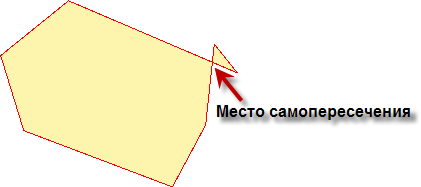
Открываем слой на редактирование и с помощью инструмента Редактирование узлов:

устраняем данное самопересечение:
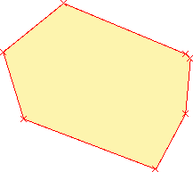
Снова запускаем инструмент Проверка геометрии и убеждаемся, что ошибка исправлена:
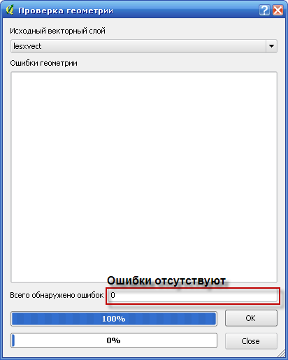
Исправление формы отдельно стоящего полигона — не сложная задача, однако на практике полигон часто окружен другими объектами, что значительно усложняет процесс исправления, поэтому при векторизации слоя время от времени отключайте режим редактирования, сохраняйте изменения и проверяйте слой на валидность.
3.2 Проверка топологической корректности
3.2.1 Щепки
Следующие полигоны на первый взгляд выглядят вполне корректно:
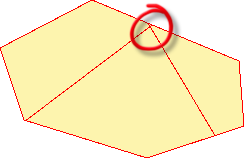
Однако если увеличить слой в обведенной области, можно наблюдать следующую картину:
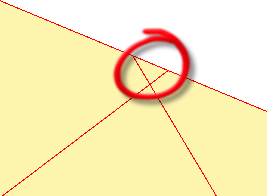
Данный полигон не является каким-либо объектом лесного хозяйства, а результат ошибки, так называемая «щепка». Конечно, вручную просматривать каждые места пересечения границ полигонов на предмет выявления щепок — непосильная задача, поэтому данный процесс можно автоматизировать. Главный признак щепок — это их малая площадь, поэтому будем поступать следующим образом. Добавим в атрибутивную таблицу слоя новое поле, содержащее значение площади объекта, затем отсортируем их по возрастанию и проверим на наличие щепок все объекты с маленькой площадью. Для этого откроем атрибутивную таблицу слоя, включим режим редактирования и запустим Калькулятор полей:
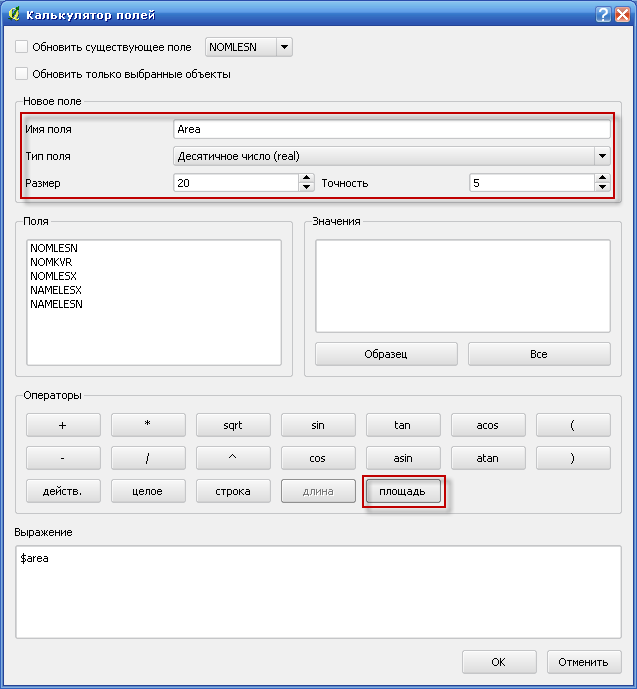
Создадим новое поле 'Area' типа real размером 20 и точностью 5 и нажмем кнопку площадь. Нажимаем OK – новое поле со значениями площадей объектов слоя будет добавлено в таблицу атрибутов:
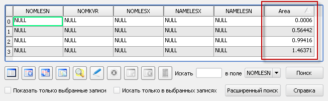
Отсортируем таблицу поле 'Area' по возрастанию и убедимся в том, что объект с наименьшей площадью — действительно щепка (таких объектов может быть несколько).
Покажем как бороться со щепками. Очевидно, что площадь щепки должна принадлежать как минимум одному из окружающих ее объектов, допустим, одному. Включаем слой на редактирование и с помощью инструмента Выбрать объекты:
выделяем щепку и объект, к которому она должна быть присоединена:
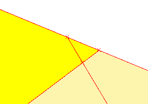
Нажимаем кнопку Объединить выбранные объекты:
Появляется диалоговое окно:
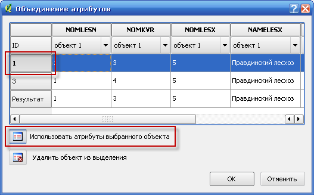
В таблице отмечаем объект,к которому мы хотим присоединить щепку и нажимаем кнопку Использовать атрибуты выбранного объекта. Жмем OK и получаем:
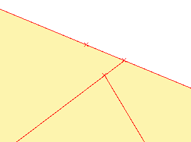
От щепки мы избавились, дальнейшее переконфигурирование форм полигонов выполняется стандартными средствами.
Если площади щепки одновременно принадлежит двум окружающим ее объектам, то в этом случае можно поступить следующим образом. Выделяем и удаляем щепку инструментом Удалить выделенное:
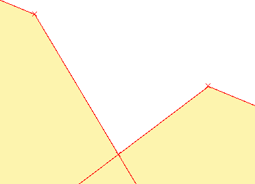
Включаем режим топологического редактирования (Установки - Свойства проекта - Общие - Включить топологическое редактирование) и перемещаем узел:
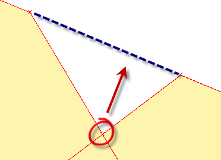
В итоге мы избавились от щепки:
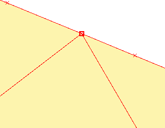
3.2.2 Топологическое изменение границы
При изменении общей границы нескольких полигонов во избежании возникновения щелей необходимо использовать режим топологического редактирования. Допустим, нам необходимо изменит общую границу следующих полигонов:
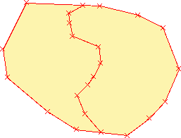
Включаем режим топологического редактирования (Установки - Свойства проекта - Общие - Включить топологическое редактирование):
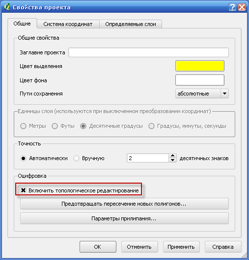
И с помощью инструмента Редактирование узлов:
меняем форму границы:
Для устранения щелей настройте прилипание к вершинам с некоторым порогом, например, в 40 пикселей (см. шаг 6 п.2). С помощью инструмента Редактирование узлов:
добейтесь одинакового количества узлов на противоположных сторонах щели (двойной щелчок на ребре добавляет узел):
И все с помощью того же инструмента:

последовательно присоедините соответствующие узлы друг к другу:
Для работы с перехлестами необходимо включить прозрачность слоя:
Как и в случае со щелями настройте прилипание и добейтесь одинакового количества узлов на противоположных границах перехлеста:
Последовательно соединяя соответствующие узлы, избавьтесь от перехлеста.
3.3 Проверка корректности векторизации через сопоставление площадей из геометрии и из лесоустройства
Суть метода проста: нужно сравнить площади выделов, получившиеся у вас после векторизации с площадью выделов, указанных в таксационных описаниях. Для выделов, расхождение в площади у которых более 10%, нужно сделать визуальную проверку.
3.4 Контроль правильности атрибутов
Для проверки того, что в процессе формирования атрибутики соседним областям (например, лесничествам или кварталам) не был по ошибки присвоен одинаковый признак, существует достаточно простой визуальный метод.
Откройте векторизованный слой лесоустройства. В окне Свойства слоя перейдите на вкладку Символика. Выберите Тип легенды - Уникальное значение и в Поле классификации выберите поле атрибутивной таблицы, корректность которого вы хотите проверить (в примере — поле NOMKVR, соответствующее номеру квартала). Нажмите кнопку Классифицировать, а затем OK.
Слой будет выглядеть следующим образом:
Внимательно изучите данный слой на предмет отсутствия соседних полигонов с одинаковыми цветами. Последнее соответствует случаю, когда разным кварталам проставлены одинаковые номера.
Отдельные неправильно пронумерованные полигоны вы таким образом можете и пропустить, но если ошибка носит массовый характер, вы ее непременно заметите.
Другую возможную ошибку, когда в номер квартала у вас вкрадывается ошибка, проверить еще проще. Нужно использовать классификацию по уникальным значениям и выбрать классификацию по полю с номером квартала. В таком варианте все выделы в пределах одного квартала получат один и тот же цвет. Если какой-то то выдел имеет неправильный номер квартала, он будет резко выделяться на фоне других.
4 Векторизация лесопатологических выделов
Координаты мест, в которых наблюдаются нарушения леса могут быть получены в ходе полевых работ с помощью GPS приемника. Однако зачастую размеры лесопатологических зон настолько велики, что обойти их границы не представляется возможным. В этом случае для полного описания лесопатологических выделов необходимо привлечение данных дистанционного зондирования. То есть, имея координаты места наблюдения нарушения и дату наблюдения, можно подобрать снимок по которому полностью определить размер и границы нарушений

Рассмотрим, как имея векторный слой лесоустройства и нанесенный по космическому снимку слой пожаров (или других нарушений), получить слой лесопатологических выделов.
Лесоустройство с нанесенными номерами выделов:
Совместим слой лесоустройства с границей оцифрованной по спутниковому снимку лесопатологической зоны:
Сформируем слой участков выделов, подвергшихся пожару. Для этого воспользуемся инструментом Пересечение:
В открывшемся окне укажем следующее:
Нажимаем OK. Получаем слой лесопатологических выделов:
Отметим, что вся атрибутика слоя границ пожара была присоединена к данному слою.
Исходя из значения точности привязки (векторизации) для выделов площадью менее 2 Га невозможно однозначно определить являются ли они ЛП или нет. Поэтому, после проведения вышеописанной процедуры получения слоя лесопатологических выделов необходимо исследовать каждый выдел на предмет определения его площади и удалить из слоя все полигоны, площадь которых менее 2 Га.
4.1 Объединение выделов по атрибутам
Одной из наиболее распространенных задач является объединение объектов векторного слоя по признаку. Например, объединение ЛП-выделов в один большой выдел в пределах квартала. Рассмотрим пример.
Откроем слой лесопатологических выделов:
Выберите Инструменты - Обработка - Объединение по признаку:
В открывшемся окне в поле Исходный векторный слой выберите слой лесопатологических выделов (в примере intersection) и укажите Признак классификации — поле, по которому будет производиться объединение (в примере поле, содержащее номера кварталов KV_T). Укажите имя результирующего shape-файла и нажмите OK.
Появится окно с предложением добавить созданный слой в текущий проект.
Нажмите Да, результирующий слой будет выглядеть следующим образом:
То есть все объекты с одинаковым значением поля KV_T были объединены.
Стоит отметить, что данная операция приводит к утрате большого количества атрибутивной информации. И хотя результирующий слой содержит такое же количество полей, что и исходный, однако корректная информация присутствует только в поле по которому было произведено объединение (KV_T), остальные поля следует игнорировать, так как они не соответствуют логике нового слоя.
©NextGIS, разрешено для публикации на GIS-Lab.info. Авторы: Рыков Д.А., Маниша А.?., Дубинин М.Ю. Лицензия:
Ссылки по теме
Дата создания: 22.07.2010
Автор(ы): Денис Рыков